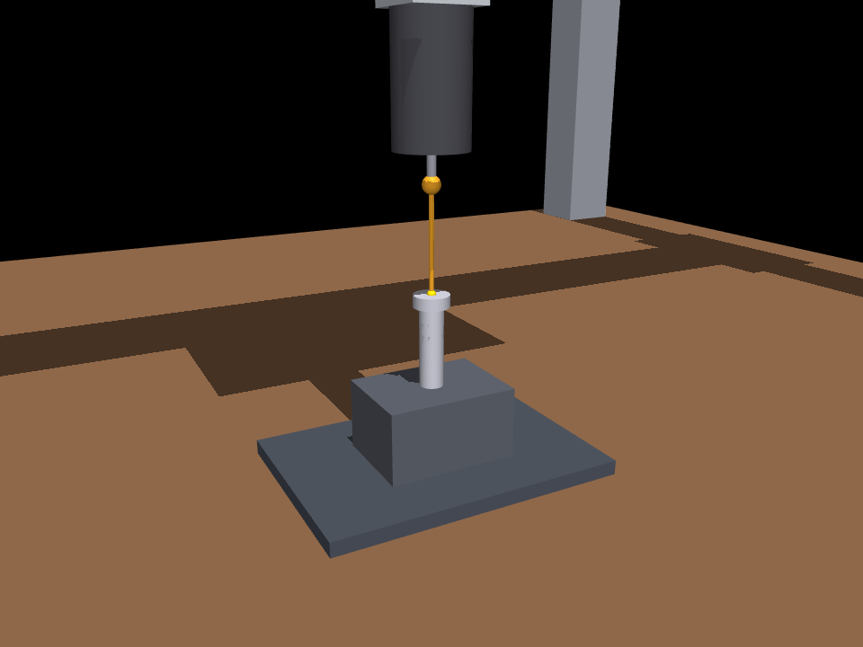
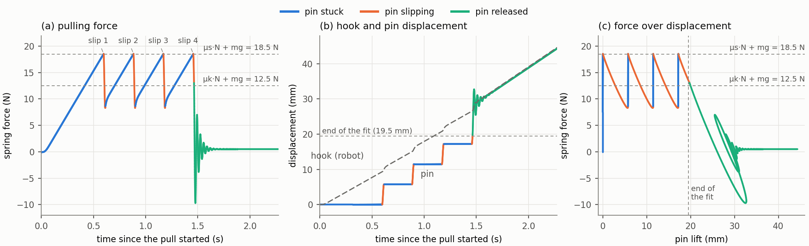
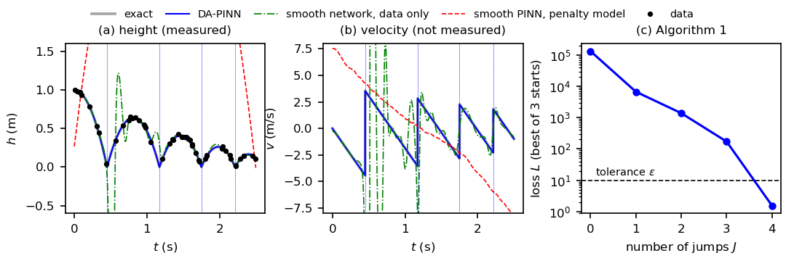
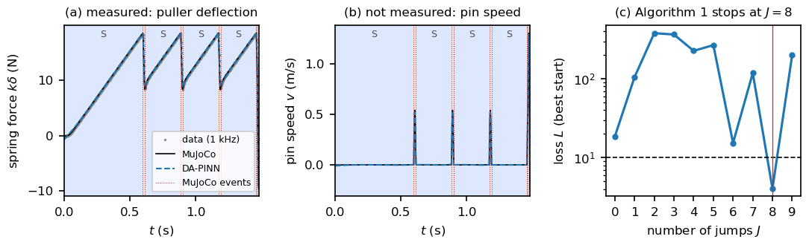

Abstract
Hybrid dynamical systems evolve smoothly and then jump at discrete events: a contact, an impact, a fastener that breaks away. A high-fidelity simulator of that behavior is often too slow to sit inside a planner. This work builds a surrogate that keeps the hybrid structure instead of smoothing it away.
A discontinuity-aware physics-informed neural network (DA-PINN) puts one small network on each smooth interval between jumps. The networks, the jump times, the sequence of modes, and the unknown physical parameters are trained together, on the measurements and on the flow, guard, and reset laws of the known physics. The number of jumps is not given in advance. An outer search accepts the first structure whose loss falls below a tolerance, and, when a mode has two possible endings, it keeps the ending with the smaller loss.
On a bouncing ball, whose exact solution is known, the method finds the four impacts and the restitution coefficient. On a gantry robot in MuJoCo that pulls a press-fitted pin out of a housing, it finds the stick–slip sequence, including whether each slip ends in an arrest or in release, and both friction coefficients within 2%.
A pin that sticks, slips, and lets go
Why one smooth network is not enough
A standard physics-informed network represents the whole trajectory with one smooth function. A jump of size ρ that the network is asked to fit inside a window of width ε leaves a physics residual of order ρ/ε. The velocity of a bouncing ball cannot be both accurate and smooth through an impact. Smoothing the contact, with a penalty spring for example, only moves the difficulty: the regularized equation is stiff, and a stiff equation is itself hard to learn.
The surrogate here is a hybrid system. Between events the state follows a mode-dependent flow. At an event a guard condition is met, a reset map updates the state, and a new mode begins. The training loss is the size of the violation of those three laws, plus the mismatch with the measurements. A loss near one means the data and the physics are both met within their tolerances.
-
One network
Each of the J+1 pieces is a network with two hidden layers of 32 tanh units and 64 collocation points. The pieces do not have to join smoothly.
-
Times and parameters
Jump times stay ordered because the piece lengths are a softmax. Unknown parameters stay inside a known box because they pass through a scaled sigmoid. Each candidate is trained from three starts, by Adam and then L-BFGS.
-
How many events
The search increases the number of jumps and accepts the first structure whose loss is below ε = 10. When a mode has two guards, both endings are trained and the smaller loss is kept.
Robotic disassembly in MuJoCo

The pin has mass 50 g and is held over 19.5 mm by an interference fit with normal force 40 N. Static friction is 0.45 and kinetic friction is 0.30, so the pin does not slide smoothly out. It sticks while the spring stretches, breaks away at 18.5 N, slips for 17 ms, and sticks again. The fourth slip carries it out of the fit. How many slips occur depends on the friction of the unit, so the sequence is not known beforehand.
The state given to the DA-PINN is the spring deflection, which is measured, and the pin velocity, which is not. The hook motion comes from the robot encoder. The resets are the identity: deflection and velocity do not jump. What changes at each event is the mode.
- Stick. The pin is at rest and the spring stretches. The mode ends when the net pull reaches static friction.
- Slip. Kinetic friction sets the acceleration. The slip can end in an arrest, if the pin stops while friction is still slowing it, or in an exit, if the lift reaches the length of the fit.
- Released. The pin is free of the housing and rings on the spring. This mode has no further event.

Bouncing ball
The ball is the case with a reset that is not the identity. Height and velocity follow free fall until the height hits zero, and the impact replaces the velocity v by −e v. The ball is dropped from 1 m with restitution 0.8 and hits the ground four times in 2.5 s. Only the height is measured, at 50 random times, with 1 cm of noise. The restitution, the impact times, and the velocity are unknown.
Two baselines each use one smooth network on the whole window: a fit to the data alone, and a PINN with a penalty contact model. Neither can represent the velocity jumps.

What is recovered
- 4 impacts found for the ball, on every noise seed
- 0.1% error in the restitution, true value 0.8
- 8 events of the pin, in the true mode sequence
- 1.7% largest friction error, on the kinetic coefficient
| Bouncing ball | Press-fitted pin | |
|---|---|---|
| Unknown parameters | restitution e, true value 0.8 | friction μs, μk, true values 0.45 and 0.30 |
| Events found | 4 impacts, for all 3 noise seeds | 8 events, modes stick–slip four times, then released |
| Event-time error | 1.1 ± 0.6 ms | ≤ 1.1 ms on all eight events |
| Parameter estimate | e = 0.7994 ± 0.0010 | μs = 0.4495 (−0.1%), μk = 0.3052 (+1.7%) |
| Measured state | 0.5% on height | 1.1% on spring deflection |
| Unmeasured velocity | 11% | 7.5%, through the slips and the ringing |

Code
The repository reproduces both experiments. Seeds are fixed, PyTorch runs in double precision, and each training run uses one CPU thread. With the pinned versions (Python 3.13, PyTorch 2.9.1, MuJoCo 3.14.0) a run on the same machine reproduces the numbers above. The full run takes about 25 minutes on eight cores.
github.com/shivanshutripath/dapinn-hybrid-surrogates
Citation
@misc{tripathi2026hybrid,
title = {Hybrid-time {PINNs}: Discontinuity-Aware Physics-Informed Neural
Networks for Learning Hybrid Dynamical Systems},
author = {Tripathi, Shivanshu and Raissi, Maziar},
year = {2026},
url = {https://shivanshutripath.github.io/projects/hybrid-surrogates/}
}